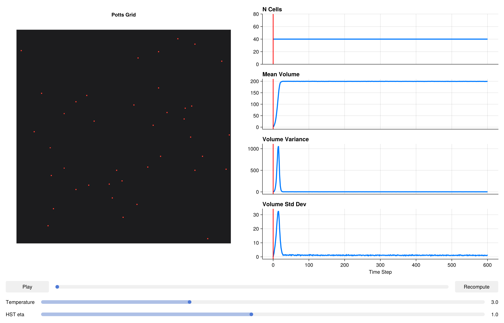

using CairoMakie
CairoMakie.activate!()Thermodynamic HST Penalties
The classic Potts volume penalty HV = λ(V - Vtarget)² is convenient but thermodynamically inconsistent at finite temperature. The problem is that it treats the target volume as a fixed external field — the cell behaves as if coupled to a spring whose other end is nailed to the wall. This violates detailed balance for the fluctuations of V_target itself: if the target can evolve (e.g., after growth or mitosis), the equilibrium distribution of actual volumes does not match a Boltzmann distribution at temperature T.
The Homeostatic Stochastic Trapping (HST) penalty fixes this by modelling the target volume as an Ornstein–Uhlenbeck (OU) process that relaxes toward the actual volume with a timescale controlled by eta (η). In the limit η → 0, the HST penalty converges to the classical quadratic. For η > 0, the equilibrium distribution of volumes is Gaussian with a variance that depends correctly on both T and λ — satisfying detailed balance and giving physically correct thermal fluctuations.
Practical recommendation: use HSTVolumeComponent (and the analogous HST surface area component) whenever your simulation is quantitative or when volume fluctuations are an observable of interest. The overhead compared to the classical quadratic is negligible.
Packages
using PottsToolkit
using MakiePotts
using Statistics: mean, std, varCell Types
CellA = CellType(:CellA)
Medium = CellType(:Medium, is_background = true)CellType(:Medium, true)Classical System (Reference)
VolumeComponent uses the standard quadratic penalty H = λ(V−V₀)². We use this as the baseline against which HST is compared.
sys_classical = PottsSystem(
cell_types = [Medium, CellA],
penalties = [
VolumeComponent(CellA => (λ = 5.0f0, target = 200)),
AdhesionComponent(
(CellA, CellA) => 2.0f0,
(CellA, Medium) => 16.0f0
)
]
)PottsSystem{Tuple{VolumeComponent{Rigid}, AdhesionComponent{Rigid, false}}, Tuple{}}(CellType[CellType(:Medium, true), CellType(:CellA, false)], (VolumeComponent{Rigid}(Dict{CellType, @NamedTuple{target::Float32, λ::Float32}}(CellType(:CellA, false) => (target = 200.0, λ = 5.0))), AdhesionComponent{Rigid, false}(Dict{Tuple{CellType, CellType}, Float32}((CellType(:CellA, false), CellType(:CellA, false)) => 2.0, (CellType(:Medium, true), CellType(:CellA, false)) => 16.0))), (), 10)HST System
HSTVolumeComponent takes the same per-cell-type (λ, target) parameters as VolumeComponent, plus a global eta (η) that sets the OU relaxation rate. η has units of inverse MCS; η = 1.0 means the OU process relaxes fully within ~1 MCS, which is appropriate for well-mixed simulations. η = 0.1 gives slower relaxation, suitable when cells grow on timescales of tens of MCS.
SurfaceAreaComponent is included to constrain cell shape alongside volume, giving a more realistic mechanical phenotype.
sys_hst = PottsSystem(
cell_types = [Medium, CellA],
penalties = [
HSTVolumeComponent(CellA => (λ = 5.0f0, target = 200); eta = 1.0),
SurfaceAreaComponent(CellA => (λ = 1.0f0, target = 60)),
AdhesionComponent(
(CellA, CellA) => 2.0f0,
(CellA, Medium) => 16.0f0
)
]
)PottsSystem{Tuple{HSTVolumeComponent{Rigid}, SurfaceAreaComponent{Rigid}, AdhesionComponent{Rigid, false}}, Tuple{}}(CellType[CellType(:Medium, true), CellType(:CellA, false)], (HSTVolumeComponent{Rigid}(Dict{CellType, @NamedTuple{target::Float32, λ::Float32}}(CellType(:CellA, false) => (target = 200.0, λ = 5.0)), 1.0f0), SurfaceAreaComponent{Rigid}(Dict{CellType, @NamedTuple{target::Float32, λ::Float32}}(CellType(:CellA, false) => (target = 60.0, λ = 1.0)), 1.0f0), AdhesionComponent{Rigid, false}(Dict{Tuple{CellType, CellType}, Float32}((CellType(:CellA, false), CellType(:CellA, false)) => 2.0, (CellType(:Medium, true), CellType(:CellA, false)) => 16.0))), (), 10)Problems
Identical grid, cell count, and run length for a fair comparison. Both systems get the same random seed via the same algorithm.
prob_classical = PottsProblem(
sys_classical,
Dict(CellA => 40),
(200, 200);
tspan = (0, 600),
topology = VonNeumannTopology{2}()
)
prob_hst = PottsProblem(
sys_hst,
Dict(CellA => 40),
(200, 200);
tspan = (0, 600),
topology = VonNeumannTopology{2}()
)
alg = CheckerboardMetropolis(T = 3.0f0, sweeps_per_step = 10)
sol_classical = solve(prob_classical, alg; saveat = 6)
sol_hst = solve(prob_hst, alg; saveat = 6)retcode: Success
Interpolation: No interpolation
t: 101-element Vector{Int64}:
0
6
12
18
24
30
36
42
48
54
⋮
552
558
564
570
576
582
588
594
600
u: 101-element Vector{Any}:
(grid = UInt32[0x00000000 0x00000000 … 0x00000000 0x00000000; 0x00000000 0x00000000 … 0x00000000 0x00000000; … ; 0x00000000 0x00000000 … 0x00000000 0x00000000; 0x00000000 0x00000000 … 0x00000000 0x00000000], cell_data = @NamedTuple{volumes::Int32, target_volumes::Int32, cell_types::UInt8, target_surface_areas::Int32, pressures::Float32, surface_areas::Int32, tensions::Float32}[(volumes = 1, target_volumes = 200, cell_types = 0x01, target_surface_areas = 60, pressures = 0.0, surface_areas = 4, tensions = 0.0), (volumes = 1, target_volumes = 200, cell_types = 0x01, target_surface_areas = 60, pressures = 0.0, surface_areas = 4, tensions = 0.0), (volumes = 1, target_volumes = 200, cell_types = 0x01, target_surface_areas = 60, pressures = 0.0, surface_areas = 4, tensions = 0.0), (volumes = 1, target_volumes = 200, cell_types = 0x01, target_surface_areas = 60, pressures = 0.0, surface_areas = 4, tensions = 0.0), (volumes = 1, target_volumes = 200, cell_types = 0x01, target_surface_areas = 60, pressures = 0.0, surface_areas = 4, tensions = 0.0), (volumes = 1, target_volumes = 200, cell_types = 0x01, target_surface_areas = 60, pressures = 0.0, surface_areas = 4, tensions = 0.0), (volumes = 1, target_volumes = 200, cell_types = 0x01, target_surface_areas = 60, pressures = 0.0, surface_areas = 4, tensions = 0.0), (volumes = 1, target_volumes = 200, cell_types = 0x01, target_surface_areas = 60, pressures = 0.0, surface_areas = 4, tensions = 0.0), (volumes = 1, target_volumes = 200, cell_types = 0x01, target_surface_areas = 60, pressures = 0.0, surface_areas = 4, tensions = 0.0), (volumes = 1, target_volumes = 200, cell_types = 0x01, target_surface_areas = 60, pressures = 0.0, surface_areas = 4, tensions = 0.0) … (volumes = 1, target_volumes = 200, cell_types = 0x01, target_surface_areas = 60, pressures = 0.0, surface_areas = 4, tensions = 0.0), (volumes = 1, target_volumes = 200, cell_types = 0x01, target_surface_areas = 60, pressures = 0.0, surface_areas = 4, tensions = 0.0), (volumes = 1, target_volumes = 200, cell_types = 0x01, target_surface_areas = 60, pressures = 0.0, surface_areas = 4, tensions = 0.0), (volumes = 1, target_volumes = 200, cell_types = 0x01, target_surface_areas = 60, pressures = 0.0, surface_areas = 4, tensions = 0.0), (volumes = 1, target_volumes = 200, cell_types = 0x01, target_surface_areas = 60, pressures = 0.0, surface_areas = 4, tensions = 0.0), (volumes = 1, target_volumes = 200, cell_types = 0x01, target_surface_areas = 60, pressures = 0.0, surface_areas = 4, tensions = 0.0), (volumes = 1, target_volumes = 200, cell_types = 0x01, target_surface_areas = 60, pressures = 0.0, surface_areas = 4, tensions = 0.0), (volumes = 1, target_volumes = 200, cell_types = 0x01, target_surface_areas = 60, pressures = 0.0, surface_areas = 4, tensions = 0.0), (volumes = 1, target_volumes = 200, cell_types = 0x01, target_surface_areas = 60, pressures = 0.0, surface_areas = 4, tensions = 0.0), (volumes = 1, target_volumes = 200, cell_types = 0x01, target_surface_areas = 60, pressures = 0.0, surface_areas = 4, tensions = 0.0)], N_cells = Base.RefValue{Int64}(40))
(grid = UInt32[0x00000000 0x00000000 … 0x00000000 0x00000000; 0x00000000 0x00000000 … 0x00000000 0x00000000; … ; 0x00000000 0x00000000 … 0x00000000 0x00000000; 0x00000000 0x00000000 … 0x00000000 0x00000000], cell_data = @NamedTuple{volumes::Int32, target_volumes::Int32, cell_types::UInt8, target_surface_areas::Int32, pressures::Float32, surface_areas::Int32, tensions::Float32}[(volumes = 13, target_volumes = 200, cell_types = 0x01, target_surface_areas = 60, pressures = -1877.1361, surface_areas = 22, tensions = -77.63671), (volumes = 36, target_volumes = 200, cell_types = 0x01, target_surface_areas = 60, pressures = -1645.2161, surface_areas = 42, tensions = -37.08258), (volumes = 11, target_volumes = 200, cell_types = 0x01, target_surface_areas = 60, pressures = -1887.1245, surface_areas = 20, tensions = -78.9551), (volumes = 17, target_volumes = 200, cell_types = 0x01, target_surface_areas = 60, pressures = -1836.3207, surface_areas = 22, tensions = -78.27346), (volumes = 29, target_volumes = 200, cell_types = 0x01, target_surface_areas = 60, pressures = -1715.7042, surface_areas = 42, tensions = -34.97536), (volumes = 25, target_volumes = 200, cell_types = 0x01, target_surface_areas = 60, pressures = -1760.3838, surface_areas = 30, tensions = -59.994167), (volumes = 21, target_volumes = 200, cell_types = 0x01, target_surface_areas = 60, pressures = -1793.1094, surface_areas = 32, tensions = -58.282837), (volumes = 17, target_volumes = 200, cell_types = 0x01, target_surface_areas = 60, pressures = -1846.0074, surface_areas = 24, tensions = -71.95593), (volumes = 42, target_volumes = 200, cell_types = 0x01, target_surface_areas = 60, pressures = -1592.8823, surface_areas = 44, tensions = -34.75249), (volumes = 14, target_volumes = 200, cell_types = 0x01, target_surface_areas = 60, pressures = -1847.0894, surface_areas = 24, tensions = -75.02762) … (volumes = 15, target_volumes = 200, cell_types = 0x01, target_surface_areas = 60, pressures = -1845.4894, surface_areas = 18, tensions = -84.5805), (volumes = 25, target_volumes = 200, cell_types = 0x01, target_surface_areas = 60, pressures = -1755.2551, surface_areas = 26, tensions = -68.936264), (volumes = 21, target_volumes = 200, cell_types = 0x01, target_surface_areas = 60, pressures = -1787.1602, surface_areas = 34, tensions = -53.677708), (volumes = 32, target_volumes = 200, cell_types = 0x01, target_surface_areas = 60, pressures = -1693.1217, surface_areas = 42, tensions = -36.43891), (volumes = 27, target_volumes = 200, cell_types = 0x01, target_surface_areas = 60, pressures = -1738.9005, surface_areas = 26, tensions = -64.6429), (volumes = 30, target_volumes = 200, cell_types = 0x01, target_surface_areas = 60, pressures = -1705.5426, surface_areas = 32, tensions = -50.494106), (volumes = 16, target_volumes = 200, cell_types = 0x01, target_surface_areas = 60, pressures = -1844.1641, surface_areas = 22, tensions = -80.18684), (volumes = 30, target_volumes = 200, cell_types = 0x01, target_surface_areas = 60, pressures = -1715.9161, surface_areas = 36, tensions = -48.37775), (volumes = 12, target_volumes = 200, cell_types = 0x01, target_surface_areas = 60, pressures = -1883.812, surface_areas = 18, tensions = -84.871414), (volumes = 21, target_volumes = 200, cell_types = 0x01, target_surface_areas = 60, pressures = -1797.4485, surface_areas = 28, tensions = -67.40772)], N_cells = Base.RefValue{Int64}(40))
(grid = UInt32[0x00000000 0x00000000 … 0x00000000 0x00000000; 0x00000000 0x00000000 … 0x00000000 0x00000000; … ; 0x00000000 0x00000000 … 0x00000000 0x00000000; 0x00000000 0x00000000 … 0x00000000 0x00000000], cell_data = @NamedTuple{volumes::Int32, target_volumes::Int32, cell_types::UInt8, target_surface_areas::Int32, pressures::Float32, surface_areas::Int32, tensions::Float32}[(volumes = 56, target_volumes = 200, cell_types = 0x01, target_surface_areas = 60, pressures = -1448.8817, surface_areas = 50, tensions = -17.061928), (volumes = 124, target_volumes = 200, cell_types = 0x01, target_surface_areas = 60, pressures = -774.8001, surface_areas = 92, tensions = 68.27486), (volumes = 67, target_volumes = 200, cell_types = 0x01, target_surface_areas = 60, pressures = -1354.952, surface_areas = 58, tensions = -10.827495), (volumes = 87, target_volumes = 200, cell_types = 0x01, target_surface_areas = 60, pressures = -1151.3856, surface_areas = 62, tensions = 5.515974), (volumes = 121, target_volumes = 200, cell_types = 0x01, target_surface_areas = 60, pressures = -818.8737, surface_areas = 86, tensions = 48.290844), (volumes = 119, target_volumes = 200, cell_types = 0x01, target_surface_areas = 60, pressures = -817.2952, surface_areas = 86, tensions = 47.847393), (volumes = 89, target_volumes = 200, cell_types = 0x01, target_surface_areas = 60, pressures = -1123.2671, surface_areas = 80, tensions = 36.633564), (volumes = 80, target_volumes = 200, cell_types = 0x01, target_surface_areas = 60, pressures = -1214.3989, surface_areas = 64, tensions = 9.4795685), (volumes = 118, target_volumes = 200, cell_types = 0x01, target_surface_areas = 60, pressures = -842.0016, surface_areas = 86, tensions = 52.735085), (volumes = 63, target_volumes = 200, cell_types = 0x01, target_surface_areas = 60, pressures = -1383.5482, surface_areas = 80, tensions = 39.290264) … (volumes = 72, target_volumes = 200, cell_types = 0x01, target_surface_areas = 60, pressures = -1286.7161, surface_areas = 50, tensions = -19.547293), (volumes = 87, target_volumes = 200, cell_types = 0x01, target_surface_areas = 60, pressures = -1141.7379, surface_areas = 64, tensions = 6.290537), (volumes = 92, target_volumes = 200, cell_types = 0x01, target_surface_areas = 60, pressures = -1083.2758, surface_areas = 74, tensions = 24.751009), (volumes = 110, target_volumes = 200, cell_types = 0x01, target_surface_areas = 60, pressures = -902.0086, surface_areas = 74, tensions = 28.365114), (volumes = 95, target_volumes = 200, cell_types = 0x01, target_surface_areas = 60, pressures = -1066.8268, surface_areas = 76, tensions = 32.726692), (volumes = 109, target_volumes = 200, cell_types = 0x01, target_surface_areas = 60, pressures = -898.81036, surface_areas = 82, tensions = 46.072), (volumes = 75, target_volumes = 200, cell_types = 0x01, target_surface_areas = 60, pressures = -1272.3246, surface_areas = 68, tensions = 13.540994), (volumes = 145, target_volumes = 200, cell_types = 0x01, target_surface_areas = 60, pressures = -566.3209, surface_areas = 112, tensions = 99.54035), (volumes = 51, target_volumes = 200, cell_types = 0x01, target_surface_areas = 60, pressures = -1506.3739, surface_areas = 62, tensions = 0.18125576), (volumes = 81, target_volumes = 200, cell_types = 0x01, target_surface_areas = 60, pressures = -1207.756, surface_areas = 62, tensions = 8.714355)], N_cells = Base.RefValue{Int64}(40))
(grid = UInt32[0x00000000 0x00000000 … 0x00000000 0x00000000; 0x00000000 0x00000000 … 0x00000000 0x00000000; … ; 0x00000000 0x00000000 … 0x00000000 0x00000000; 0x00000000 0x00000000 … 0x00000000 0x00000000], cell_data = @NamedTuple{volumes::Int32, target_volumes::Int32, cell_types::UInt8, target_surface_areas::Int32, pressures::Float32, surface_areas::Int32, tensions::Float32}[(volumes = 170, target_volumes = 200, cell_types = 0x01, target_surface_areas = 60, pressures = -333.79578, surface_areas = 114, tensions = 103.64088), (volumes = 182, target_volumes = 200, cell_types = 0x01, target_surface_areas = 60, pressures = -165.45139, surface_areas = 94, tensions = 73.434326), (volumes = 177, target_volumes = 200, cell_types = 0x01, target_surface_areas = 60, pressures = -254.8417, surface_areas = 122, tensions = 118.02803), (volumes = 189, target_volumes = 200, cell_types = 0x01, target_surface_areas = 60, pressures = -108.726944, surface_areas = 98, tensions = 78.52634), (volumes = 189, target_volumes = 200, cell_types = 0x01, target_surface_areas = 60, pressures = -109.8482, surface_areas = 100, tensions = 78.441345), (volumes = 191, target_volumes = 200, cell_types = 0x01, target_surface_areas = 60, pressures = -95.51893, surface_areas = 106, tensions = 93.78601), (volumes = 194, target_volumes = 200, cell_types = 0x01, target_surface_areas = 60, pressures = -83.56083, surface_areas = 110, tensions = 101.57631), (volumes = 191, target_volumes = 200, cell_types = 0x01, target_surface_areas = 60, pressures = -92.26912, surface_areas = 118, tensions = 119.839066), (volumes = 192, target_volumes = 200, cell_types = 0x01, target_surface_areas = 60, pressures = -82.438385, surface_areas = 104, tensions = 89.314384), (volumes = 132, target_volumes = 200, cell_types = 0x01, target_surface_areas = 60, pressures = -689.4503, surface_areas = 112, tensions = 106.73055) … (volumes = 165, target_volumes = 200, cell_types = 0x01, target_surface_areas = 60, pressures = -378.37878, surface_areas = 104, tensions = 83.85326), (volumes = 186, target_volumes = 200, cell_types = 0x01, target_surface_areas = 60, pressures = -161.74832, surface_areas = 106, tensions = 93.579216), (volumes = 190, target_volumes = 200, cell_types = 0x01, target_surface_areas = 60, pressures = -84.67084, surface_areas = 102, tensions = 89.087326), (volumes = 197, target_volumes = 200, cell_types = 0x01, target_surface_areas = 60, pressures = -39.331287, surface_areas = 90, tensions = 60.17421), (volumes = 189, target_volumes = 200, cell_types = 0x01, target_surface_areas = 60, pressures = -122.493614, surface_areas = 102, tensions = 84.24027), (volumes = 193, target_volumes = 200, cell_types = 0x01, target_surface_areas = 60, pressures = -66.24126, surface_areas = 100, tensions = 83.59464), (volumes = 165, target_volumes = 200, cell_types = 0x01, target_surface_areas = 60, pressures = -358.26407, surface_areas = 112, tensions = 104.387), (volumes = 197, target_volumes = 200, cell_types = 0x01, target_surface_areas = 60, pressures = -30.293943, surface_areas = 106, tensions = 86.03289), (volumes = 139, target_volumes = 200, cell_types = 0x01, target_surface_areas = 60, pressures = -624.6503, surface_areas = 112, tensions = 99.0058), (volumes = 180, target_volumes = 200, cell_types = 0x01, target_surface_areas = 60, pressures = -197.37415, surface_areas = 110, tensions = 98.60658)], N_cells = Base.RefValue{Int64}(40))
(grid = UInt32[0x00000000 0x00000000 … 0x00000000 0x00000000; 0x00000000 0x00000000 … 0x00000000 0x00000000; … ; 0x00000000 0x00000000 … 0x00000000 0x00000000; 0x00000000 0x00000000 … 0x00000000 0x00000000], cell_data = @NamedTuple{volumes::Int32, target_volumes::Int32, cell_types::UInt8, target_surface_areas::Int32, pressures::Float32, surface_areas::Int32, tensions::Float32}[(volumes = 199, target_volumes = 200, cell_types = 0x01, target_surface_areas = 60, pressures = -15.582828, surface_areas = 94, tensions = 67.55877), (volumes = 200, target_volumes = 200, cell_types = 0x01, target_surface_areas = 60, pressures = -8.831152, surface_areas = 82, tensions = 46.266125), (volumes = 202, target_volumes = 200, cell_types = 0x01, target_surface_areas = 60, pressures = -0.19773722, surface_areas = 92, tensions = 61.303238), (volumes = 199, target_volumes = 200, cell_types = 0x01, target_surface_areas = 60, pressures = -0.65536356, surface_areas = 86, tensions = 50.51054), (volumes = 199, target_volumes = 200, cell_types = 0x01, target_surface_areas = 60, pressures = -1.8067195, surface_areas = 92, tensions = 67.56271), (volumes = 197, target_volumes = 200, cell_types = 0x01, target_surface_areas = 60, pressures = -32.28274, surface_areas = 94, tensions = 66.49175), (volumes = 201, target_volumes = 200, cell_types = 0x01, target_surface_areas = 60, pressures = -0.79936624, surface_areas = 90, tensions = 61.25235), (volumes = 199, target_volumes = 200, cell_types = 0x01, target_surface_areas = 60, pressures = -6.116453, surface_areas = 92, tensions = 62.278156), (volumes = 196, target_volumes = 200, cell_types = 0x01, target_surface_areas = 60, pressures = -39.499332, surface_areas = 92, tensions = 62.41874), (volumes = 183, target_volumes = 200, cell_types = 0x01, target_surface_areas = 60, pressures = -175.01196, surface_areas = 112, tensions = 105.86677) … (volumes = 200, target_volumes = 200, cell_types = 0x01, target_surface_areas = 60, pressures = 4.176301, surface_areas = 90, tensions = 58.17488), (volumes = 200, target_volumes = 200, cell_types = 0x01, target_surface_areas = 60, pressures = -3.0673718, surface_areas = 88, tensions = 55.71887), (volumes = 201, target_volumes = 200, cell_types = 0x01, target_surface_areas = 60, pressures = 9.661879, surface_areas = 90, tensions = 65.17736), (volumes = 200, target_volumes = 200, cell_types = 0x01, target_surface_areas = 60, pressures = -11.381674, surface_areas = 90, tensions = 56.6045), (volumes = 201, target_volumes = 200, cell_types = 0x01, target_surface_areas = 60, pressures = 5.677272, surface_areas = 88, tensions = 54.985622), (volumes = 199, target_volumes = 200, cell_types = 0x01, target_surface_areas = 60, pressures = -10.821622, surface_areas = 98, tensions = 72.16315), (volumes = 192, target_volumes = 200, cell_types = 0x01, target_surface_areas = 60, pressures = -89.40052, surface_areas = 96, tensions = 74.80746), (volumes = 201, target_volumes = 200, cell_types = 0x01, target_surface_areas = 60, pressures = 0.13905764, surface_areas = 92, tensions = 64.75997), (volumes = 198, target_volumes = 200, cell_types = 0x01, target_surface_areas = 60, pressures = -31.034643, surface_areas = 110, tensions = 96.30121), (volumes = 199, target_volumes = 200, cell_types = 0x01, target_surface_areas = 60, pressures = -2.244904, surface_areas = 88, tensions = 57.55808)], N_cells = Base.RefValue{Int64}(40))
(grid = UInt32[0x00000000 0x00000000 … 0x00000000 0x00000000; 0x00000000 0x00000000 … 0x00000000 0x00000000; … ; 0x00000000 0x00000000 … 0x00000000 0x00000000; 0x00000000 0x00000000 … 0x00000000 0x00000000], cell_data = @NamedTuple{volumes::Int32, target_volumes::Int32, cell_types::UInt8, target_surface_areas::Int32, pressures::Float32, surface_areas::Int32, tensions::Float32}[(volumes = 199, target_volumes = 200, cell_types = 0x01, target_surface_areas = 60, pressures = -1.0377655, surface_areas = 84, tensions = 47.673916), (volumes = 201, target_volumes = 200, cell_types = 0x01, target_surface_areas = 60, pressures = 2.9433424, surface_areas = 84, tensions = 45.84832), (volumes = 199, target_volumes = 200, cell_types = 0x01, target_surface_areas = 60, pressures = -19.683094, surface_areas = 88, tensions = 54.69445), (volumes = 198, target_volumes = 200, cell_types = 0x01, target_surface_areas = 60, pressures = -25.826128, surface_areas = 82, tensions = 43.478416), (volumes = 199, target_volumes = 200, cell_types = 0x01, target_surface_areas = 60, pressures = -11.35249, surface_areas = 86, tensions = 58.90676), (volumes = 198, target_volumes = 200, cell_types = 0x01, target_surface_areas = 60, pressures = -1.7370749, surface_areas = 90, tensions = 59.68223), (volumes = 198, target_volumes = 200, cell_types = 0x01, target_surface_areas = 60, pressures = -15.543331, surface_areas = 90, tensions = 61.523705), (volumes = 200, target_volumes = 200, cell_types = 0x01, target_surface_areas = 60, pressures = -10.629218, surface_areas = 90, tensions = 57.183968), (volumes = 197, target_volumes = 200, cell_types = 0x01, target_surface_areas = 60, pressures = -25.504868, surface_areas = 88, tensions = 56.956627), (volumes = 201, target_volumes = 200, cell_types = 0x01, target_surface_areas = 60, pressures = 11.91945, surface_areas = 102, tensions = 83.59116) … (volumes = 198, target_volumes = 200, cell_types = 0x01, target_surface_areas = 60, pressures = -13.011085, surface_areas = 88, tensions = 60.054253), (volumes = 201, target_volumes = 200, cell_types = 0x01, target_surface_areas = 60, pressures = 10.875827, surface_areas = 88, tensions = 53.645535), (volumes = 200, target_volumes = 200, cell_types = 0x01, target_surface_areas = 60, pressures = 3.9943871, surface_areas = 86, tensions = 52.649094), (volumes = 202, target_volumes = 200, cell_types = 0x01, target_surface_areas = 60, pressures = 8.47084, surface_areas = 82, tensions = 47.81999), (volumes = 201, target_volumes = 200, cell_types = 0x01, target_surface_areas = 60, pressures = 10.654433, surface_areas = 84, tensions = 46.533295), (volumes = 201, target_volumes = 200, cell_types = 0x01, target_surface_areas = 60, pressures = 5.5279717, surface_areas = 96, tensions = 70.94878), (volumes = 199, target_volumes = 200, cell_types = 0x01, target_surface_areas = 60, pressures = -19.006649, surface_areas = 94, tensions = 68.3979), (volumes = 198, target_volumes = 200, cell_types = 0x01, target_surface_areas = 60, pressures = -16.598167, surface_areas = 94, tensions = 66.62594), (volumes = 198, target_volumes = 200, cell_types = 0x01, target_surface_areas = 60, pressures = -17.783077, surface_areas = 104, tensions = 83.500275), (volumes = 199, target_volumes = 200, cell_types = 0x01, target_surface_areas = 60, pressures = -7.040248, surface_areas = 84, tensions = 50.38024)], N_cells = Base.RefValue{Int64}(40))
(grid = UInt32[0x00000000 0x00000000 … 0x00000000 0x00000000; 0x00000000 0x00000000 … 0x00000000 0x00000000; … ; 0x00000000 0x00000000 … 0x00000000 0x00000000; 0x00000000 0x00000000 … 0x00000000 0x00000000], cell_data = @NamedTuple{volumes::Int32, target_volumes::Int32, cell_types::UInt8, target_surface_areas::Int32, pressures::Float32, surface_areas::Int32, tensions::Float32}[(volumes = 202, target_volumes = 200, cell_types = 0x01, target_surface_areas = 60, pressures = 7.9288273, surface_areas = 84, tensions = 46.289017), (volumes = 200, target_volumes = 200, cell_types = 0x01, target_surface_areas = 60, pressures = 17.125107, surface_areas = 76, tensions = 32.967716), (volumes = 202, target_volumes = 200, cell_types = 0x01, target_surface_areas = 60, pressures = 20.169886, surface_areas = 82, tensions = 43.164307), (volumes = 199, target_volumes = 200, cell_types = 0x01, target_surface_areas = 60, pressures = -12.041291, surface_areas = 82, tensions = 42.433685), (volumes = 198, target_volumes = 200, cell_types = 0x01, target_surface_areas = 60, pressures = 2.0395026, surface_areas = 86, tensions = 59.141254), (volumes = 199, target_volumes = 200, cell_types = 0x01, target_surface_areas = 60, pressures = -8.227801, surface_areas = 88, tensions = 56.06002), (volumes = 201, target_volumes = 200, cell_types = 0x01, target_surface_areas = 60, pressures = 1.3247812, surface_areas = 86, tensions = 45.961617), (volumes = 198, target_volumes = 200, cell_types = 0x01, target_surface_areas = 60, pressures = -20.326077, surface_areas = 88, tensions = 54.82748), (volumes = 201, target_volumes = 200, cell_types = 0x01, target_surface_areas = 60, pressures = -1.3824801, surface_areas = 88, tensions = 53.528404), (volumes = 201, target_volumes = 200, cell_types = 0x01, target_surface_areas = 60, pressures = 2.9965568, surface_areas = 100, tensions = 79.41921) … (volumes = 199, target_volumes = 200, cell_types = 0x01, target_surface_areas = 60, pressures = -21.012085, surface_areas = 88, tensions = 56.574238), (volumes = 200, target_volumes = 200, cell_types = 0x01, target_surface_areas = 60, pressures = 10.4018955, surface_areas = 86, tensions = 52.53708), (volumes = 200, target_volumes = 200, cell_types = 0x01, target_surface_areas = 60, pressures = -10.846363, surface_areas = 80, tensions = 37.133217), (volumes = 199, target_volumes = 200, cell_types = 0x01, target_surface_areas = 60, pressures = -15.532174, surface_areas = 76, tensions = 30.65207), (volumes = 198, target_volumes = 200, cell_types = 0x01, target_surface_areas = 60, pressures = 0.59389234, surface_areas = 82, tensions = 44.088142), (volumes = 198, target_volumes = 200, cell_types = 0x01, target_surface_areas = 60, pressures = -26.472553, surface_areas = 96, tensions = 70.4495), (volumes = 199, target_volumes = 200, cell_types = 0x01, target_surface_areas = 60, pressures = -5.3566275, surface_areas = 90, tensions = 59.51613), (volumes = 198, target_volumes = 200, cell_types = 0x01, target_surface_areas = 60, pressures = -17.907198, surface_areas = 90, tensions = 63.43357), (volumes = 198, target_volumes = 200, cell_types = 0x01, target_surface_areas = 60, pressures = -13.168805, surface_areas = 98, tensions = 75.05764), (volumes = 200, target_volumes = 200, cell_types = 0x01, target_surface_areas = 60, pressures = 4.0582557, surface_areas = 84, tensions = 44.093487)], N_cells = Base.RefValue{Int64}(40))
(grid = UInt32[0x00000000 0x00000000 … 0x00000000 0x00000000; 0x00000000 0x00000000 … 0x00000000 0x00000000; … ; 0x00000000 0x00000000 … 0x00000000 0x00000000; 0x00000000 0x00000000 … 0x00000000 0x00000000], cell_data = @NamedTuple{volumes::Int32, target_volumes::Int32, cell_types::UInt8, target_surface_areas::Int32, pressures::Float32, surface_areas::Int32, tensions::Float32}[(volumes = 199, target_volumes = 200, cell_types = 0x01, target_surface_areas = 60, pressures = 6.6839304, surface_areas = 82, tensions = 41.304985), (volumes = 199, target_volumes = 200, cell_types = 0x01, target_surface_areas = 60, pressures = -6.4219546, surface_areas = 70, tensions = 23.697824), (volumes = 201, target_volumes = 200, cell_types = 0x01, target_surface_areas = 60, pressures = -8.650784, surface_areas = 78, tensions = 37.308414), (volumes = 200, target_volumes = 200, cell_types = 0x01, target_surface_areas = 60, pressures = -13.334753, surface_areas = 78, tensions = 36.41017), (volumes = 200, target_volumes = 200, cell_types = 0x01, target_surface_areas = 60, pressures = 0.42223382, surface_areas = 84, tensions = 44.91035), (volumes = 200, target_volumes = 200, cell_types = 0x01, target_surface_areas = 60, pressures = 7.8050747, surface_areas = 86, tensions = 48.99747), (volumes = 200, target_volumes = 200, cell_types = 0x01, target_surface_areas = 60, pressures = 7.209735, surface_areas = 82, tensions = 47.792805), (volumes = 201, target_volumes = 200, cell_types = 0x01, target_surface_areas = 60, pressures = -1.1275814, surface_areas = 86, tensions = 50.282227), (volumes = 200, target_volumes = 200, cell_types = 0x01, target_surface_areas = 60, pressures = 11.78155, surface_areas = 82, tensions = 43.222282), (volumes = 198, target_volumes = 200, cell_types = 0x01, target_surface_areas = 60, pressures = -24.299381, surface_areas = 98, tensions = 73.96709) … (volumes = 198, target_volumes = 200, cell_types = 0x01, target_surface_areas = 60, pressures = -14.2607, surface_areas = 82, tensions = 45.543564), (volumes = 201, target_volumes = 200, cell_types = 0x01, target_surface_areas = 60, pressures = 9.596903, surface_areas = 84, tensions = 47.77899), (volumes = 200, target_volumes = 200, cell_types = 0x01, target_surface_areas = 60, pressures = 8.833627, surface_areas = 76, tensions = 33.88198), (volumes = 201, target_volumes = 200, cell_types = 0x01, target_surface_areas = 60, pressures = 4.1111565, surface_areas = 72, tensions = 19.861107), (volumes = 202, target_volumes = 200, cell_types = 0x01, target_surface_areas = 60, pressures = 10.326345, surface_areas = 80, tensions = 37.440964), (volumes = 200, target_volumes = 200, cell_types = 0x01, target_surface_areas = 60, pressures = -4.813264, surface_areas = 90, tensions = 63.67194), (volumes = 200, target_volumes = 200, cell_types = 0x01, target_surface_areas = 60, pressures = 9.663648, surface_areas = 90, tensions = 60.93194), (volumes = 200, target_volumes = 200, cell_types = 0x01, target_surface_areas = 60, pressures = 0.95769143, surface_areas = 90, tensions = 68.47998), (volumes = 202, target_volumes = 200, cell_types = 0x01, target_surface_areas = 60, pressures = 0.34786236, surface_areas = 98, tensions = 75.89761), (volumes = 200, target_volumes = 200, cell_types = 0x01, target_surface_areas = 60, pressures = -5.3330655, surface_areas = 84, tensions = 50.822044)], N_cells = Base.RefValue{Int64}(40))
(grid = UInt32[0x00000000 0x00000000 … 0x00000000 0x00000000; 0x00000000 0x00000000 … 0x00000000 0x00000000; … ; 0x00000000 0x00000000 … 0x00000000 0x00000000; 0x00000000 0x00000000 … 0x00000000 0x00000000], cell_data = @NamedTuple{volumes::Int32, target_volumes::Int32, cell_types::UInt8, target_surface_areas::Int32, pressures::Float32, surface_areas::Int32, tensions::Float32}[(volumes = 199, target_volumes = 200, cell_types = 0x01, target_surface_areas = 60, pressures = -13.718612, surface_areas = 80, tensions = 40.580524), (volumes = 199, target_volumes = 200, cell_types = 0x01, target_surface_areas = 60, pressures = -7.143914, surface_areas = 70, tensions = 21.093485), (volumes = 199, target_volumes = 200, cell_types = 0x01, target_surface_areas = 60, pressures = -11.523017, surface_areas = 78, tensions = 39.527412), (volumes = 203, target_volumes = 200, cell_types = 0x01, target_surface_areas = 60, pressures = 16.061913, surface_areas = 78, tensions = 38.221375), (volumes = 198, target_volumes = 200, cell_types = 0x01, target_surface_areas = 60, pressures = -7.80619, surface_areas = 82, tensions = 44.44447), (volumes = 199, target_volumes = 200, cell_types = 0x01, target_surface_areas = 60, pressures = -11.314564, surface_areas = 84, tensions = 47.174534), (volumes = 200, target_volumes = 200, cell_types = 0x01, target_surface_areas = 60, pressures = -10.737547, surface_areas = 78, tensions = 28.556746), (volumes = 199, target_volumes = 200, cell_types = 0x01, target_surface_areas = 60, pressures = -13.5271435, surface_areas = 82, tensions = 43.189922), (volumes = 201, target_volumes = 200, cell_types = 0x01, target_surface_areas = 60, pressures = 14.910221, surface_areas = 82, tensions = 42.482796), (volumes = 201, target_volumes = 200, cell_types = 0x01, target_surface_areas = 60, pressures = 7.056723, surface_areas = 98, tensions = 73.97857) … (volumes = 203, target_volumes = 200, cell_types = 0x01, target_surface_areas = 60, pressures = 26.420488, surface_areas = 82, tensions = 42.02215), (volumes = 196, target_volumes = 200, cell_types = 0x01, target_surface_areas = 60, pressures = -36.412907, surface_areas = 84, tensions = 45.33597), (volumes = 201, target_volumes = 200, cell_types = 0x01, target_surface_areas = 60, pressures = 10.1313715, surface_areas = 74, tensions = 25.577578), (volumes = 198, target_volumes = 200, cell_types = 0x01, target_surface_areas = 60, pressures = -22.511692, surface_areas = 72, tensions = 23.618996), (volumes = 200, target_volumes = 200, cell_types = 0x01, target_surface_areas = 60, pressures = 6.4367676, surface_areas = 78, tensions = 34.518105), (volumes = 201, target_volumes = 200, cell_types = 0x01, target_surface_areas = 60, pressures = 19.63691, surface_areas = 86, tensions = 51.603428), (volumes = 200, target_volumes = 200, cell_types = 0x01, target_surface_areas = 60, pressures = -3.7712247, surface_areas = 90, tensions = 62.069687), (volumes = 199, target_volumes = 200, cell_types = 0x01, target_surface_areas = 60, pressures = -7.0580645, surface_areas = 90, tensions = 57.94823), (volumes = 200, target_volumes = 200, cell_types = 0x01, target_surface_areas = 60, pressures = -4.4712944, surface_areas = 98, tensions = 78.498314), (volumes = 200, target_volumes = 200, cell_types = 0x01, target_surface_areas = 60, pressures = 0.032503605, surface_areas = 78, tensions = 34.12488)], N_cells = Base.RefValue{Int64}(40))
(grid = UInt32[0x00000000 0x00000000 … 0x00000000 0x00000000; 0x00000000 0x00000000 … 0x00000000 0x00000000; … ; 0x00000000 0x00000000 … 0x00000000 0x00000000; 0x00000000 0x00000000 … 0x00000000 0x00000000], cell_data = @NamedTuple{volumes::Int32, target_volumes::Int32, cell_types::UInt8, target_surface_areas::Int32, pressures::Float32, surface_areas::Int32, tensions::Float32}[(volumes = 199, target_volumes = 200, cell_types = 0x01, target_surface_areas = 60, pressures = -4.928583, surface_areas = 80, tensions = 41.212177), (volumes = 199, target_volumes = 200, cell_types = 0x01, target_surface_areas = 60, pressures = -8.4771805, surface_areas = 68, tensions = 15.254223), (volumes = 202, target_volumes = 200, cell_types = 0x01, target_surface_areas = 60, pressures = 19.730175, surface_areas = 78, tensions = 39.219803), (volumes = 201, target_volumes = 200, cell_types = 0x01, target_surface_areas = 60, pressures = 14.651613, surface_areas = 74, tensions = 28.299871), (volumes = 200, target_volumes = 200, cell_types = 0x01, target_surface_areas = 60, pressures = 5.1189632, surface_areas = 80, tensions = 39.722824), (volumes = 198, target_volumes = 200, cell_types = 0x01, target_surface_areas = 60, pressures = -8.955496, surface_areas = 80, tensions = 41.875084), (volumes = 201, target_volumes = 200, cell_types = 0x01, target_surface_areas = 60, pressures = 15.228696, surface_areas = 78, tensions = 35.680622), (volumes = 200, target_volumes = 200, cell_types = 0x01, target_surface_areas = 60, pressures = 0.29381037, surface_areas = 82, tensions = 43.004185), (volumes = 201, target_volumes = 200, cell_types = 0x01, target_surface_areas = 60, pressures = 16.2647, surface_areas = 82, tensions = 43.40007), (volumes = 200, target_volumes = 200, cell_types = 0x01, target_surface_areas = 60, pressures = 19.751722, surface_areas = 98, tensions = 74.048874) … (volumes = 200, target_volumes = 200, cell_types = 0x01, target_surface_areas = 60, pressures = -0.1534357, surface_areas = 80, tensions = 39.80621), (volumes = 201, target_volumes = 200, cell_types = 0x01, target_surface_areas = 60, pressures = -1.8706173, surface_areas = 84, tensions = 47.658615), (volumes = 200, target_volumes = 200, cell_types = 0x01, target_surface_areas = 60, pressures = 0.7496301, surface_areas = 74, tensions = 28.515669), (volumes = 201, target_volumes = 200, cell_types = 0x01, target_surface_areas = 60, pressures = 1.8067522, surface_areas = 72, tensions = 23.597046), (volumes = 198, target_volumes = 200, cell_types = 0x01, target_surface_areas = 60, pressures = -21.865162, surface_areas = 76, tensions = 37.336502), (volumes = 199, target_volumes = 200, cell_types = 0x01, target_surface_areas = 60, pressures = -10.189933, surface_areas = 86, tensions = 55.540596), (volumes = 199, target_volumes = 200, cell_types = 0x01, target_surface_areas = 60, pressures = -17.18136, surface_areas = 90, tensions = 63.667892), (volumes = 198, target_volumes = 200, cell_types = 0x01, target_surface_areas = 60, pressures = -13.79246, surface_areas = 88, tensions = 55.10812), (volumes = 201, target_volumes = 200, cell_types = 0x01, target_surface_areas = 60, pressures = -0.9239931, surface_areas = 98, tensions = 74.86018), (volumes = 199, target_volumes = 200, cell_types = 0x01, target_surface_areas = 60, pressures = -16.676918, surface_areas = 78, tensions = 39.503082)], N_cells = Base.RefValue{Int64}(40))
⋮
(grid = UInt32[0x00000000 0x00000000 … 0x00000000 0x00000000; 0x00000000 0x00000000 … 0x00000000 0x00000000; … ; 0x00000000 0x00000000 … 0x00000000 0x00000000; 0x00000000 0x00000000 … 0x00000000 0x00000000], cell_data = @NamedTuple{volumes::Int32, target_volumes::Int32, cell_types::UInt8, target_surface_areas::Int32, pressures::Float32, surface_areas::Int32, tensions::Float32}[(volumes = 201, target_volumes = 200, cell_types = 0x01, target_surface_areas = 60, pressures = 17.128372, surface_areas = 66, tensions = 15.13888), (volumes = 201, target_volumes = 200, cell_types = 0x01, target_surface_areas = 60, pressures = 7.4804053, surface_areas = 68, tensions = 15.02021), (volumes = 200, target_volumes = 200, cell_types = 0x01, target_surface_areas = 60, pressures = -6.2169375, surface_areas = 74, tensions = 24.781487), (volumes = 200, target_volumes = 200, cell_types = 0x01, target_surface_areas = 60, pressures = -3.6513286, surface_areas = 70, tensions = 20.113405), (volumes = 199, target_volumes = 200, cell_types = 0x01, target_surface_areas = 60, pressures = -0.8565428, surface_areas = 74, tensions = 29.580536), (volumes = 199, target_volumes = 200, cell_types = 0x01, target_surface_areas = 60, pressures = 0.9226246, surface_areas = 68, tensions = 18.385643), (volumes = 200, target_volumes = 200, cell_types = 0x01, target_surface_areas = 60, pressures = 1.477948, surface_areas = 72, tensions = 20.814781), (volumes = 198, target_volumes = 200, cell_types = 0x01, target_surface_areas = 60, pressures = -11.2038355, surface_areas = 72, tensions = 22.057377), (volumes = 200, target_volumes = 200, cell_types = 0x01, target_surface_areas = 60, pressures = 0.024210691, surface_areas = 74, tensions = 23.329151), (volumes = 200, target_volumes = 200, cell_types = 0x01, target_surface_areas = 60, pressures = -1.0783741, surface_areas = 84, tensions = 47.034443) … (volumes = 201, target_volumes = 200, cell_types = 0x01, target_surface_areas = 60, pressures = 8.238394, surface_areas = 70, tensions = 20.031961), (volumes = 200, target_volumes = 200, cell_types = 0x01, target_surface_areas = 60, pressures = -5.8213325, surface_areas = 70, tensions = 19.359312), (volumes = 200, target_volumes = 200, cell_types = 0x01, target_surface_areas = 60, pressures = 7.8529105, surface_areas = 66, tensions = 12.883966), (volumes = 199, target_volumes = 200, cell_types = 0x01, target_surface_areas = 60, pressures = -7.3152895, surface_areas = 70, tensions = 20.320534), (volumes = 199, target_volumes = 200, cell_types = 0x01, target_surface_areas = 60, pressures = -18.26799, surface_areas = 72, tensions = 23.753565), (volumes = 202, target_volumes = 200, cell_types = 0x01, target_surface_areas = 60, pressures = 8.812964, surface_areas = 78, tensions = 33.867542), (volumes = 200, target_volumes = 200, cell_types = 0x01, target_surface_areas = 60, pressures = -9.844264, surface_areas = 84, tensions = 47.730534), (volumes = 198, target_volumes = 200, cell_types = 0x01, target_surface_areas = 60, pressures = -20.077757, surface_areas = 76, tensions = 30.560425), (volumes = 200, target_volumes = 200, cell_types = 0x01, target_surface_areas = 60, pressures = 4.411495, surface_areas = 82, tensions = 45.577995), (volumes = 200, target_volumes = 200, cell_types = 0x01, target_surface_areas = 60, pressures = -12.316772, surface_areas = 72, tensions = 21.481678)], N_cells = Base.RefValue{Int64}(40))
(grid = UInt32[0x00000000 0x00000000 … 0x00000000 0x00000000; 0x00000000 0x00000000 … 0x00000000 0x00000000; … ; 0x00000000 0x00000000 … 0x00000000 0x00000000; 0x00000000 0x00000000 … 0x00000000 0x00000000], cell_data = @NamedTuple{volumes::Int32, target_volumes::Int32, cell_types::UInt8, target_surface_areas::Int32, pressures::Float32, surface_areas::Int32, tensions::Float32}[(volumes = 202, target_volumes = 200, cell_types = 0x01, target_surface_areas = 60, pressures = 15.869247, surface_areas = 66, tensions = 13.938807), (volumes = 199, target_volumes = 200, cell_types = 0x01, target_surface_areas = 60, pressures = -13.1310625, surface_areas = 68, tensions = 13.260775), (volumes = 200, target_volumes = 200, cell_types = 0x01, target_surface_areas = 60, pressures = 2.2187312, surface_areas = 74, tensions = 32.90634), (volumes = 201, target_volumes = 200, cell_types = 0x01, target_surface_areas = 60, pressures = 13.553622, surface_areas = 70, tensions = 25.527458), (volumes = 198, target_volumes = 200, cell_types = 0x01, target_surface_areas = 60, pressures = -17.335691, surface_areas = 74, tensions = 29.229069), (volumes = 198, target_volumes = 200, cell_types = 0x01, target_surface_areas = 60, pressures = -20.422262, surface_areas = 68, tensions = 18.583742), (volumes = 199, target_volumes = 200, cell_types = 0x01, target_surface_areas = 60, pressures = -3.4933343, surface_areas = 72, tensions = 28.478397), (volumes = 198, target_volumes = 200, cell_types = 0x01, target_surface_areas = 60, pressures = -18.864508, surface_areas = 72, tensions = 26.709131), (volumes = 202, target_volumes = 200, cell_types = 0x01, target_surface_areas = 60, pressures = 14.234362, surface_areas = 74, tensions = 32.02888), (volumes = 199, target_volumes = 200, cell_types = 0x01, target_surface_areas = 60, pressures = -8.882808, surface_areas = 84, tensions = 44.091015) … (volumes = 200, target_volumes = 200, cell_types = 0x01, target_surface_areas = 60, pressures = -5.6196413, surface_areas = 70, tensions = 16.99097), (volumes = 199, target_volumes = 200, cell_types = 0x01, target_surface_areas = 60, pressures = -4.5929985, surface_areas = 70, tensions = 21.074358), (volumes = 198, target_volumes = 200, cell_types = 0x01, target_surface_areas = 60, pressures = -15.793326, surface_areas = 66, tensions = 12.989545), (volumes = 201, target_volumes = 200, cell_types = 0x01, target_surface_areas = 60, pressures = 14.161271, surface_areas = 70, tensions = 17.59324), (volumes = 200, target_volumes = 200, cell_types = 0x01, target_surface_areas = 60, pressures = 6.738521, surface_areas = 72, tensions = 18.696142), (volumes = 200, target_volumes = 200, cell_types = 0x01, target_surface_areas = 60, pressures = -2.3275557, surface_areas = 78, tensions = 34.892082), (volumes = 198, target_volumes = 200, cell_types = 0x01, target_surface_areas = 60, pressures = -17.657312, surface_areas = 84, tensions = 51.546093), (volumes = 200, target_volumes = 200, cell_types = 0x01, target_surface_areas = 60, pressures = -6.758791, surface_areas = 76, tensions = 29.925991), (volumes = 197, target_volumes = 200, cell_types = 0x01, target_surface_areas = 60, pressures = -15.64612, surface_areas = 82, tensions = 45.117664), (volumes = 201, target_volumes = 200, cell_types = 0x01, target_surface_areas = 60, pressures = 2.453874, surface_areas = 72, tensions = 20.538557)], N_cells = Base.RefValue{Int64}(40))
(grid = UInt32[0x00000000 0x00000000 … 0x00000000 0x00000000; 0x00000000 0x00000000 … 0x00000000 0x00000000; … ; 0x00000000 0x00000000 … 0x00000000 0x00000000; 0x00000000 0x00000000 … 0x00000000 0x00000000], cell_data = @NamedTuple{volumes::Int32, target_volumes::Int32, cell_types::UInt8, target_surface_areas::Int32, pressures::Float32, surface_areas::Int32, tensions::Float32}[(volumes = 201, target_volumes = 200, cell_types = 0x01, target_surface_areas = 60, pressures = 8.634806, surface_areas = 66, tensions = 15.343888), (volumes = 200, target_volumes = 200, cell_types = 0x01, target_surface_areas = 60, pressures = -9.188812, surface_areas = 66, tensions = 14.448939), (volumes = 200, target_volumes = 200, cell_types = 0x01, target_surface_areas = 60, pressures = -4.465292, surface_areas = 74, tensions = 27.437595), (volumes = 198, target_volumes = 200, cell_types = 0x01, target_surface_areas = 60, pressures = -16.823536, surface_areas = 70, tensions = 22.291082), (volumes = 198, target_volumes = 200, cell_types = 0x01, target_surface_areas = 60, pressures = -11.950618, surface_areas = 74, tensions = 28.444021), (volumes = 199, target_volumes = 200, cell_types = 0x01, target_surface_areas = 60, pressures = -16.400549, surface_areas = 68, tensions = 18.064928), (volumes = 201, target_volumes = 200, cell_types = 0x01, target_surface_areas = 60, pressures = 11.111433, surface_areas = 72, tensions = 22.796663), (volumes = 199, target_volumes = 200, cell_types = 0x01, target_surface_areas = 60, pressures = -12.883617, surface_areas = 72, tensions = 22.562965), (volumes = 198, target_volumes = 200, cell_types = 0x01, target_surface_areas = 60, pressures = -18.60296, surface_areas = 74, tensions = 23.808317), (volumes = 198, target_volumes = 200, cell_types = 0x01, target_surface_areas = 60, pressures = 0.26580477, surface_areas = 84, tensions = 48.017868) … (volumes = 198, target_volumes = 200, cell_types = 0x01, target_surface_areas = 60, pressures = -22.17325, surface_areas = 70, tensions = 24.62055), (volumes = 198, target_volumes = 200, cell_types = 0x01, target_surface_areas = 60, pressures = -21.316273, surface_areas = 70, tensions = 23.995455), (volumes = 197, target_volumes = 200, cell_types = 0x01, target_surface_areas = 60, pressures = -12.911582, surface_areas = 66, tensions = 11.74685), (volumes = 199, target_volumes = 200, cell_types = 0x01, target_surface_areas = 60, pressures = -11.441863, surface_areas = 68, tensions = 20.484058), (volumes = 201, target_volumes = 200, cell_types = 0x01, target_surface_areas = 60, pressures = 2.875923, surface_areas = 72, tensions = 22.219927), (volumes = 200, target_volumes = 200, cell_types = 0x01, target_surface_areas = 60, pressures = 0.049074054, surface_areas = 78, tensions = 35.616566), (volumes = 198, target_volumes = 200, cell_types = 0x01, target_surface_areas = 60, pressures = -14.364369, surface_areas = 80, tensions = 34.895996), (volumes = 199, target_volumes = 200, cell_types = 0x01, target_surface_areas = 60, pressures = -6.9503555, surface_areas = 76, tensions = 31.40736), (volumes = 199, target_volumes = 200, cell_types = 0x01, target_surface_areas = 60, pressures = -12.445419, surface_areas = 82, tensions = 43.691727), (volumes = 201, target_volumes = 200, cell_types = 0x01, target_surface_areas = 60, pressures = 5.8503714, surface_areas = 72, tensions = 25.497292)], N_cells = Base.RefValue{Int64}(40))
(grid = UInt32[0x00000000 0x00000000 … 0x00000000 0x00000000; 0x00000000 0x00000000 … 0x00000000 0x00000000; … ; 0x00000000 0x00000000 … 0x00000000 0x00000000; 0x00000000 0x00000000 … 0x00000000 0x00000000], cell_data = @NamedTuple{volumes::Int32, target_volumes::Int32, cell_types::UInt8, target_surface_areas::Int32, pressures::Float32, surface_areas::Int32, tensions::Float32}[(volumes = 201, target_volumes = 200, cell_types = 0x01, target_surface_areas = 60, pressures = 19.700195, surface_areas = 68, tensions = 14.211589), (volumes = 198, target_volumes = 200, cell_types = 0x01, target_surface_areas = 60, pressures = -23.020077, surface_areas = 66, tensions = 12.16251), (volumes = 199, target_volumes = 200, cell_types = 0x01, target_surface_areas = 60, pressures = -3.9644532, surface_areas = 74, tensions = 28.07477), (volumes = 200, target_volumes = 200, cell_types = 0x01, target_surface_areas = 60, pressures = -10.831595, surface_areas = 70, tensions = 20.249403), (volumes = 199, target_volumes = 200, cell_types = 0x01, target_surface_areas = 60, pressures = -11.005613, surface_areas = 74, tensions = 26.17128), (volumes = 199, target_volumes = 200, cell_types = 0x01, target_surface_areas = 60, pressures = -3.501944, surface_areas = 68, tensions = 11.160419), (volumes = 198, target_volumes = 200, cell_types = 0x01, target_surface_areas = 60, pressures = -14.555212, surface_areas = 72, tensions = 19.890463), (volumes = 199, target_volumes = 200, cell_types = 0x01, target_surface_areas = 60, pressures = -6.8398714, surface_areas = 72, tensions = 28.923534), (volumes = 200, target_volumes = 200, cell_types = 0x01, target_surface_areas = 60, pressures = -10.145559, surface_areas = 74, tensions = 29.85523), (volumes = 199, target_volumes = 200, cell_types = 0x01, target_surface_areas = 60, pressures = -15.753997, surface_areas = 84, tensions = 47.846916) … (volumes = 202, target_volumes = 200, cell_types = 0x01, target_surface_areas = 60, pressures = 26.702717, surface_areas = 70, tensions = 18.812262), (volumes = 199, target_volumes = 200, cell_types = 0x01, target_surface_areas = 60, pressures = 6.5771394, surface_areas = 70, tensions = 18.72116), (volumes = 198, target_volumes = 200, cell_types = 0x01, target_surface_areas = 60, pressures = -15.340597, surface_areas = 66, tensions = 14.619021), (volumes = 198, target_volumes = 200, cell_types = 0x01, target_surface_areas = 60, pressures = -20.12914, surface_areas = 68, tensions = 18.49074), (volumes = 199, target_volumes = 200, cell_types = 0x01, target_surface_areas = 60, pressures = -15.388088, surface_areas = 72, tensions = 27.863417), (volumes = 198, target_volumes = 200, cell_types = 0x01, target_surface_areas = 60, pressures = -17.36509, surface_areas = 78, tensions = 35.584766), (volumes = 199, target_volumes = 200, cell_types = 0x01, target_surface_areas = 60, pressures = -5.6336255, surface_areas = 80, tensions = 41.863495), (volumes = 198, target_volumes = 200, cell_types = 0x01, target_surface_areas = 60, pressures = -20.06158, surface_areas = 76, tensions = 32.64702), (volumes = 199, target_volumes = 200, cell_types = 0x01, target_surface_areas = 60, pressures = -14.388219, surface_areas = 82, tensions = 47.381714), (volumes = 198, target_volumes = 200, cell_types = 0x01, target_surface_areas = 60, pressures = -29.983727, surface_areas = 72, tensions = 24.872454)], N_cells = Base.RefValue{Int64}(40))
(grid = UInt32[0x00000000 0x00000000 … 0x00000000 0x00000000; 0x00000000 0x00000000 … 0x00000000 0x00000000; … ; 0x00000000 0x00000000 … 0x00000000 0x00000000; 0x00000000 0x00000000 … 0x00000000 0x00000000], cell_data = @NamedTuple{volumes::Int32, target_volumes::Int32, cell_types::UInt8, target_surface_areas::Int32, pressures::Float32, surface_areas::Int32, tensions::Float32}[(volumes = 200, target_volumes = 200, cell_types = 0x01, target_surface_areas = 60, pressures = -6.839658, surface_areas = 66, tensions = 14.86003), (volumes = 199, target_volumes = 200, cell_types = 0x01, target_surface_areas = 60, pressures = 3.0864868, surface_areas = 64, tensions = 6.4209733), (volumes = 199, target_volumes = 200, cell_types = 0x01, target_surface_areas = 60, pressures = 9.876902, surface_areas = 74, tensions = 23.341759), (volumes = 199, target_volumes = 200, cell_types = 0x01, target_surface_areas = 60, pressures = -16.273678, surface_areas = 70, tensions = 18.512465), (volumes = 200, target_volumes = 200, cell_types = 0x01, target_surface_areas = 60, pressures = 1.4802722, surface_areas = 74, tensions = 28.3211), (volumes = 198, target_volumes = 200, cell_types = 0x01, target_surface_areas = 60, pressures = -25.768284, surface_areas = 68, tensions = 14.718692), (volumes = 200, target_volumes = 200, cell_types = 0x01, target_surface_areas = 60, pressures = -7.571151, surface_areas = 72, tensions = 28.123053), (volumes = 198, target_volumes = 200, cell_types = 0x01, target_surface_areas = 60, pressures = -22.754353, surface_areas = 72, tensions = 24.610332), (volumes = 200, target_volumes = 200, cell_types = 0x01, target_surface_areas = 60, pressures = -2.1660938, surface_areas = 74, tensions = 28.767712), (volumes = 199, target_volumes = 200, cell_types = 0x01, target_surface_areas = 60, pressures = -20.827156, surface_areas = 84, tensions = 46.87366) … (volumes = 198, target_volumes = 200, cell_types = 0x01, target_surface_areas = 60, pressures = -13.881779, surface_areas = 70, tensions = 16.968428), (volumes = 199, target_volumes = 200, cell_types = 0x01, target_surface_areas = 60, pressures = -7.9559584, surface_areas = 70, tensions = 22.41094), (volumes = 200, target_volumes = 200, cell_types = 0x01, target_surface_areas = 60, pressures = -11.613789, surface_areas = 66, tensions = 11.842551), (volumes = 199, target_volumes = 200, cell_types = 0x01, target_surface_areas = 60, pressures = -5.18544, surface_areas = 68, tensions = 19.691877), (volumes = 199, target_volumes = 200, cell_types = 0x01, target_surface_areas = 60, pressures = -21.358248, surface_areas = 72, tensions = 21.375689), (volumes = 198, target_volumes = 200, cell_types = 0x01, target_surface_areas = 60, pressures = -30.306723, surface_areas = 78, tensions = 33.06432), (volumes = 199, target_volumes = 200, cell_types = 0x01, target_surface_areas = 60, pressures = -13.2030325, surface_areas = 80, tensions = 38.04037), (volumes = 200, target_volumes = 200, cell_types = 0x01, target_surface_areas = 60, pressures = 11.354379, surface_areas = 76, tensions = 33.727783), (volumes = 199, target_volumes = 200, cell_types = 0x01, target_surface_areas = 60, pressures = -16.583513, surface_areas = 82, tensions = 42.48702), (volumes = 199, target_volumes = 200, cell_types = 0x01, target_surface_areas = 60, pressures = -11.522256, surface_areas = 72, tensions = 25.311792)], N_cells = Base.RefValue{Int64}(40))
(grid = UInt32[0x00000000 0x00000000 … 0x00000000 0x00000000; 0x00000000 0x00000000 … 0x00000000 0x00000000; … ; 0x00000000 0x00000000 … 0x00000000 0x00000000; 0x00000000 0x00000000 … 0x00000000 0x00000000], cell_data = @NamedTuple{volumes::Int32, target_volumes::Int32, cell_types::UInt8, target_surface_areas::Int32, pressures::Float32, surface_areas::Int32, tensions::Float32}[(volumes = 198, target_volumes = 200, cell_types = 0x01, target_surface_areas = 60, pressures = -25.515606, surface_areas = 66, tensions = 9.07416), (volumes = 199, target_volumes = 200, cell_types = 0x01, target_surface_areas = 60, pressures = -12.421507, surface_areas = 64, tensions = 6.370794), (volumes = 200, target_volumes = 200, cell_types = 0x01, target_surface_areas = 60, pressures = -8.785461, surface_areas = 74, tensions = 27.604095), (volumes = 199, target_volumes = 200, cell_types = 0x01, target_surface_areas = 60, pressures = -19.320984, surface_areas = 70, tensions = 20.8684), (volumes = 200, target_volumes = 200, cell_types = 0x01, target_surface_areas = 60, pressures = -2.9350176, surface_areas = 74, tensions = 27.127748), (volumes = 200, target_volumes = 200, cell_types = 0x01, target_surface_areas = 60, pressures = 1.0755756, surface_areas = 68, tensions = 16.704985), (volumes = 200, target_volumes = 200, cell_types = 0x01, target_surface_areas = 60, pressures = -1.9176761, surface_areas = 72, tensions = 25.874054), (volumes = 200, target_volumes = 200, cell_types = 0x01, target_surface_areas = 60, pressures = 5.324686, surface_areas = 72, tensions = 19.947115), (volumes = 200, target_volumes = 200, cell_types = 0x01, target_surface_areas = 60, pressures = 13.998019, surface_areas = 74, tensions = 29.077736), (volumes = 198, target_volumes = 200, cell_types = 0x01, target_surface_areas = 60, pressures = -11.282557, surface_areas = 84, tensions = 49.109898) … (volumes = 201, target_volumes = 200, cell_types = 0x01, target_surface_areas = 60, pressures = 9.323225, surface_areas = 70, tensions = 16.742386), (volumes = 199, target_volumes = 200, cell_types = 0x01, target_surface_areas = 60, pressures = -3.496614, surface_areas = 70, tensions = 19.394926), (volumes = 201, target_volumes = 200, cell_types = 0x01, target_surface_areas = 60, pressures = 8.7295065, surface_areas = 68, tensions = 16.472336), (volumes = 199, target_volumes = 200, cell_types = 0x01, target_surface_areas = 60, pressures = -15.098869, surface_areas = 68, tensions = 12.782706), (volumes = 199, target_volumes = 200, cell_types = 0x01, target_surface_areas = 60, pressures = -20.153976, surface_areas = 72, tensions = 23.892998), (volumes = 199, target_volumes = 200, cell_types = 0x01, target_surface_areas = 60, pressures = -14.542601, surface_areas = 78, tensions = 35.96486), (volumes = 201, target_volumes = 200, cell_types = 0x01, target_surface_areas = 60, pressures = -2.3416433, surface_areas = 80, tensions = 42.854603), (volumes = 198, target_volumes = 200, cell_types = 0x01, target_surface_areas = 60, pressures = -17.920004, surface_areas = 76, tensions = 28.125582), (volumes = 199, target_volumes = 200, cell_types = 0x01, target_surface_areas = 60, pressures = -6.692899, surface_areas = 82, tensions = 45.2888), (volumes = 199, target_volumes = 200, cell_types = 0x01, target_surface_areas = 60, pressures = 7.5013027, surface_areas = 72, tensions = 24.44293)], N_cells = Base.RefValue{Int64}(40))
(grid = UInt32[0x00000000 0x00000000 … 0x00000000 0x00000000; 0x00000000 0x00000000 … 0x00000000 0x00000000; … ; 0x00000000 0x00000000 … 0x00000000 0x00000000; 0x00000000 0x00000000 … 0x00000000 0x00000000], cell_data = @NamedTuple{volumes::Int32, target_volumes::Int32, cell_types::UInt8, target_surface_areas::Int32, pressures::Float32, surface_areas::Int32, tensions::Float32}[(volumes = 198, target_volumes = 200, cell_types = 0x01, target_surface_areas = 60, pressures = -13.143554, surface_areas = 66, tensions = 11.40031), (volumes = 200, target_volumes = 200, cell_types = 0x01, target_surface_areas = 60, pressures = 6.3877354, surface_areas = 66, tensions = 16.16855), (volumes = 200, target_volumes = 200, cell_types = 0x01, target_surface_areas = 60, pressures = -1.5703105, surface_areas = 74, tensions = 27.271812), (volumes = 201, target_volumes = 200, cell_types = 0x01, target_surface_areas = 60, pressures = -3.0741234, surface_areas = 70, tensions = 19.049921), (volumes = 201, target_volumes = 200, cell_types = 0x01, target_surface_areas = 60, pressures = 5.7009344, surface_areas = 74, tensions = 28.318504), (volumes = 200, target_volumes = 200, cell_types = 0x01, target_surface_areas = 60, pressures = 2.0202403, surface_areas = 68, tensions = 16.643501), (volumes = 199, target_volumes = 200, cell_types = 0x01, target_surface_areas = 60, pressures = -11.514446, surface_areas = 72, tensions = 23.095987), (volumes = 199, target_volumes = 200, cell_types = 0x01, target_surface_areas = 60, pressures = -10.942169, surface_areas = 72, tensions = 26.52428), (volumes = 198, target_volumes = 200, cell_types = 0x01, target_surface_areas = 60, pressures = -20.399376, surface_areas = 74, tensions = 36.550575), (volumes = 201, target_volumes = 200, cell_types = 0x01, target_surface_areas = 60, pressures = 4.487253, surface_areas = 84, tensions = 45.504353) … (volumes = 199, target_volumes = 200, cell_types = 0x01, target_surface_areas = 60, pressures = -13.036798, surface_areas = 70, tensions = 21.486097), (volumes = 199, target_volumes = 200, cell_types = 0x01, target_surface_areas = 60, pressures = -7.909644, surface_areas = 70, tensions = 20.654564), (volumes = 199, target_volumes = 200, cell_types = 0x01, target_surface_areas = 60, pressures = -19.164377, surface_areas = 66, tensions = 11.018297), (volumes = 200, target_volumes = 200, cell_types = 0x01, target_surface_areas = 60, pressures = -6.961401, surface_areas = 70, tensions = 21.633703), (volumes = 199, target_volumes = 200, cell_types = 0x01, target_surface_areas = 60, pressures = -17.954054, surface_areas = 72, tensions = 28.255709), (volumes = 200, target_volumes = 200, cell_types = 0x01, target_surface_areas = 60, pressures = 6.758404, surface_areas = 78, tensions = 37.8503), (volumes = 198, target_volumes = 200, cell_types = 0x01, target_surface_areas = 60, pressures = -20.406107, surface_areas = 80, tensions = 41.932274), (volumes = 199, target_volumes = 200, cell_types = 0x01, target_surface_areas = 60, pressures = 8.597682, surface_areas = 76, tensions = 35.416664), (volumes = 199, target_volumes = 200, cell_types = 0x01, target_surface_areas = 60, pressures = -17.95836, surface_areas = 82, tensions = 40.555756), (volumes = 200, target_volumes = 200, cell_types = 0x01, target_surface_areas = 60, pressures = -1.1713583, surface_areas = 72, tensions = 24.288261)], N_cells = Base.RefValue{Int64}(40))
(grid = UInt32[0x00000000 0x00000000 … 0x00000000 0x00000000; 0x00000000 0x00000000 … 0x00000000 0x00000000; … ; 0x00000000 0x00000000 … 0x00000000 0x00000000; 0x00000000 0x00000000 … 0x00000000 0x00000000], cell_data = @NamedTuple{volumes::Int32, target_volumes::Int32, cell_types::UInt8, target_surface_areas::Int32, pressures::Float32, surface_areas::Int32, tensions::Float32}[(volumes = 200, target_volumes = 200, cell_types = 0x01, target_surface_areas = 60, pressures = 0.93022203, surface_areas = 68, tensions = 14.130242), (volumes = 201, target_volumes = 200, cell_types = 0x01, target_surface_areas = 60, pressures = 10.384625, surface_areas = 66, tensions = 12.682594), (volumes = 200, target_volumes = 200, cell_types = 0x01, target_surface_areas = 60, pressures = 6.614975, surface_areas = 74, tensions = 29.095596), (volumes = 201, target_volumes = 200, cell_types = 0x01, target_surface_areas = 60, pressures = 8.8039055, surface_areas = 70, tensions = 19.52749), (volumes = 199, target_volumes = 200, cell_types = 0x01, target_surface_areas = 60, pressures = -11.406309, surface_areas = 74, tensions = 28.193829), (volumes = 200, target_volumes = 200, cell_types = 0x01, target_surface_areas = 60, pressures = -8.549533, surface_areas = 68, tensions = 14.409291), (volumes = 200, target_volumes = 200, cell_types = 0x01, target_surface_areas = 60, pressures = -19.817894, surface_areas = 74, tensions = 27.632616), (volumes = 199, target_volumes = 200, cell_types = 0x01, target_surface_areas = 60, pressures = -4.153282, surface_areas = 72, tensions = 20.14545), (volumes = 201, target_volumes = 200, cell_types = 0x01, target_surface_areas = 60, pressures = 0.6212194, surface_areas = 74, tensions = 27.714462), (volumes = 200, target_volumes = 200, cell_types = 0x01, target_surface_areas = 60, pressures = -2.3806176, surface_areas = 84, tensions = 48.08064) … (volumes = 200, target_volumes = 200, cell_types = 0x01, target_surface_areas = 60, pressures = -5.8345523, surface_areas = 70, tensions = 18.89891), (volumes = 199, target_volumes = 200, cell_types = 0x01, target_surface_areas = 60, pressures = -15.361673, surface_areas = 70, tensions = 17.285843), (volumes = 200, target_volumes = 200, cell_types = 0x01, target_surface_areas = 60, pressures = -5.768119, surface_areas = 66, tensions = 11.910799), (volumes = 200, target_volumes = 200, cell_types = 0x01, target_surface_areas = 60, pressures = -4.842638, surface_areas = 70, tensions = 17.59309), (volumes = 199, target_volumes = 200, cell_types = 0x01, target_surface_areas = 60, pressures = -19.430096, surface_areas = 72, tensions = 24.769896), (volumes = 199, target_volumes = 200, cell_types = 0x01, target_surface_areas = 60, pressures = -13.389446, surface_areas = 78, tensions = 36.24829), (volumes = 199, target_volumes = 200, cell_types = 0x01, target_surface_areas = 60, pressures = -1.4593735, surface_areas = 80, tensions = 35.53758), (volumes = 199, target_volumes = 200, cell_types = 0x01, target_surface_areas = 60, pressures = 2.7812283, surface_areas = 76, tensions = 32.59685), (volumes = 198, target_volumes = 200, cell_types = 0x01, target_surface_areas = 60, pressures = -24.149466, surface_areas = 82, tensions = 46.464943), (volumes = 197, target_volumes = 200, cell_types = 0x01, target_surface_areas = 60, pressures = -12.202869, surface_areas = 72, tensions = 23.96805)], N_cells = Base.RefValue{Int64}(40))
(grid = UInt32[0x00000000 0x00000000 … 0x00000000 0x00000000; 0x00000000 0x00000000 … 0x00000000 0x00000000; … ; 0x00000000 0x00000000 … 0x00000000 0x00000000; 0x00000000 0x00000000 … 0x00000000 0x00000000], cell_data = @NamedTuple{volumes::Int32, target_volumes::Int32, cell_types::UInt8, target_surface_areas::Int32, pressures::Float32, surface_areas::Int32, tensions::Float32}[(volumes = 199, target_volumes = 200, cell_types = 0x01, target_surface_areas = 60, pressures = -9.2578335, surface_areas = 66, tensions = 10.514442), (volumes = 200, target_volumes = 200, cell_types = 0x01, target_surface_areas = 60, pressures = -8.576344, surface_areas = 64, tensions = 6.012214), (volumes = 198, target_volumes = 200, cell_types = 0x01, target_surface_areas = 60, pressures = -17.132393, surface_areas = 74, tensions = 27.956112), (volumes = 200, target_volumes = 200, cell_types = 0x01, target_surface_areas = 60, pressures = 1.2650187, surface_areas = 70, tensions = 19.889225), (volumes = 199, target_volumes = 200, cell_types = 0x01, target_surface_areas = 60, pressures = -27.115608, surface_areas = 74, tensions = 28.604692), (volumes = 199, target_volumes = 200, cell_types = 0x01, target_surface_areas = 60, pressures = -13.408246, surface_areas = 68, tensions = 17.129753), (volumes = 198, target_volumes = 200, cell_types = 0x01, target_surface_areas = 60, pressures = -20.228449, surface_areas = 72, tensions = 24.93806), (volumes = 199, target_volumes = 200, cell_types = 0x01, target_surface_areas = 60, pressures = -7.6175885, surface_areas = 72, tensions = 21.712206), (volumes = 200, target_volumes = 200, cell_types = 0x01, target_surface_areas = 60, pressures = -7.7613287, surface_areas = 74, tensions = 25.8645), (volumes = 199, target_volumes = 200, cell_types = 0x01, target_surface_areas = 60, pressures = 5.1965814, surface_areas = 84, tensions = 42.02872) … (volumes = 200, target_volumes = 200, cell_types = 0x01, target_surface_areas = 60, pressures = -1.0136344, surface_areas = 70, tensions = 19.915398), (volumes = 200, target_volumes = 200, cell_types = 0x01, target_surface_areas = 60, pressures = -4.8840227, surface_areas = 70, tensions = 20.064352), (volumes = 199, target_volumes = 200, cell_types = 0x01, target_surface_areas = 60, pressures = -1.3994808, surface_areas = 66, tensions = 9.8134775), (volumes = 201, target_volumes = 200, cell_types = 0x01, target_surface_areas = 60, pressures = 1.1943994, surface_areas = 70, tensions = 17.765667), (volumes = 199, target_volumes = 200, cell_types = 0x01, target_surface_areas = 60, pressures = -5.819703, surface_areas = 74, tensions = 24.78691), (volumes = 197, target_volumes = 200, cell_types = 0x01, target_surface_areas = 60, pressures = -33.32865, surface_areas = 78, tensions = 37.33861), (volumes = 200, target_volumes = 200, cell_types = 0x01, target_surface_areas = 60, pressures = -5.5622206, surface_areas = 78, tensions = 36.489895), (volumes = 198, target_volumes = 200, cell_types = 0x01, target_surface_areas = 60, pressures = -17.19339, surface_areas = 76, tensions = 28.53443), (volumes = 200, target_volumes = 200, cell_types = 0x01, target_surface_areas = 60, pressures = -6.227585, surface_areas = 82, tensions = 43.980072), (volumes = 199, target_volumes = 200, cell_types = 0x01, target_surface_areas = 60, pressures = -15.953299, surface_areas = 72, tensions = 25.813738)], N_cells = Base.RefValue{Int64}(40))Comparing Volume Distributions
The key observable is the variance of cell volumes at steady state:
- Classical: σ²_V ≈ T / (2λ) from a naïve Boltzmann argument, but the actual distribution is biased because the boundary fluctuations are not correctly accounted for.
- HST: σ²_V = T / (2λ) exactly, as proven by the fluctuation- dissipation theorem for the OU process. The distribution is exactly Gaussian at equilibrium.
At T = 3.0 and λ = 5.0, the predicted HST variance is 3.0 / 10.0 = 0.3 sites² — very tight, confirming that the penalty is stiff. Increasing T in the explore_potts slider makes this difference more visible.
Interactive Dashboard
The "Volume Variance" metric is the primary comparison observable. Higher T → wider volume distribution. The HST system should show a variance that tracks the Boltzmann prediction T/(2λ), while the classical system deviates, especially at high T.
fig = explore_potts(
prob_hst, alg;
metrics = [
"N Cells" => u -> u.N_cells[],
"Mean Volume" => u -> begin
n = u.N_cells[]
n > 1 ? mean(Array(u.cell_data.volumes)[1:n]) : 0.0
end,
"Volume Variance" => u -> begin
n = u.N_cells[]
n > 1 ? var(Array(u.cell_data.volumes)[1:n]) : 0.0
end,
"Volume Std Dev" => u -> begin
n = u.N_cells[]
n > 1 ? std(Array(u.cell_data.volumes)[1:n]) : 0.0
end
],
parameters = [
"Temperature" => (
range = 0.5f0:0.5f0:8.0f0,
start = 3.0f0,
action = (prob, alg, val) -> CheckerboardMetropolis(T = val, sweeps_per_step = 10)
),
"HST eta" => (
range = 0.1f0:0.1f0:2.0f0,
start = 1.0f0,
action = (prob, alg, val) -> begin
# Rebuild the HST system with the new eta value
new_sys = PottsSystem(
cell_types = [Medium, CellA],
penalties = [
HSTVolumeComponent(CellA => (λ = 5.0f0, target = 200); eta = val),
SurfaceAreaComponent(CellA => (λ = 1.0f0, target = 60)),
AdhesionComponent(
(CellA, CellA) => 2.0f0,
(CellA, Medium) => 16.0f0
)
]
)
CheckerboardMetropolis(T = 3.0f0, sweeps_per_step = 10)
end
)
]
)
This page was generated using Literate.jl.